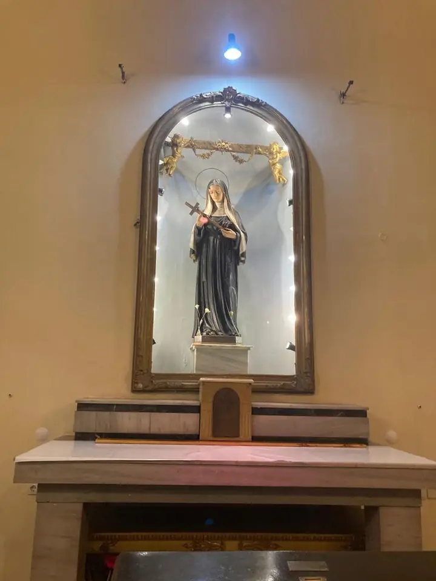

Kościoły, cmentarze i Jan Paweł II
Kościół Santa Maria Draperis
W 1909 r. Turcy i Polacy modlili się tu razem za polskich ochotników poległych w wojnie krymskiej – na mszę przybył nawet przyszły ostatni kalif.


- Dzielnica
- Beyoğlu
- Okres
- 1909
- Zwiedzanie
- Otwarte dla zwiedzających
Historia
Latem 1909 r. spod tego kościoła ruszył pochód, jakiego – według polskiej prasy – Stambuł wcześniej nie widział: Turcy i Polacy, z flagami obu narodów, szli razem do domu, w którym zmarł Mickiewicz.
Santa Maria Draperis to jedna z najstarszych parafii katolickich miasta. Franciszkanie przenieśli się w 1584 r. do Galaty, gdzie Lewantynka Clara Maria Draperis podarowała im dom z kaplicą i drewnianą ikoną Matki Bożej. W 1678 r. zbudowali kościół w Perze; płonął i walił się kilka razy, ale ikonę zawsze ratowano – do dziś zdobi ołtarz główny. Kościół leży poniżej poziomu ulicy – schodzi się do niego po stromych schodach.
Po rewolucji młodotureckiej z 1908 r. komitet „Jedność i Postęp”, z inicjatywy Tadeusza Gasztowtta – Polaka znanego w Stambule jako Seyfeddin – postanowił uczcić polskich ochotników poległych po stronie osmańskiej w wojnie krymskiej oraz samego Mickiewicza. Na mszę w Santa Maria Draperis przyszli, jak relacjonowała polska prasa emigracyjna, także liczni muzułmanie, wśród nich imam. Przybyli też działacze komitetu, weterani wojny krymskiej, książę Abdülmecid Efendi – późniejszy ostatni kalif – i delegacja z Adampola.
Potem pochód z polskimi i osmańskimi sztandarami przeszedł do domu Mickiewicza. Odsłonięto tablicę z napisem „Poeta i wielki patriota polski Adam Mickiewicz, przyjaciel Turków” (nie zachowała się), przemawiał w imieniu komitetu Selahaddin Bey, złożono w ofierze barana i rozdano portrety poety. Źródła podają różne daty: tablica nosiła datę 10 lipca 1909 r., nowsze opracowanie mówi o 17 sierpnia. Polska prasa pisała, że od rozbiorów nikt nie widział podobnej uroczystości na cześć Polski – kraju, którego wtedy nie było na mapie.


Jak zwiedzać
Wejście z İstiklal Caddesi (nr 215) przez bramę z figurą Matki Bożej w niszy; dalej strome schody w dół do kościoła. Kościół prowadzą franciszkanie, msze są głównie po włosku – aktualne godziny sprawdź na tablicy przy wejściu. Stąd do Muzeum Mickiewicza jest ok. 1 km: idź İstiklal w stronę Taksim, a potem skręć na zachód, przez bulwar Tarlabaşı – dokładna trasa pochodu z 1909 r. nie jest znana.
Postaci
- Tadeusz Gasztowtt (Seyfeddin)
- Abdülmecid Efendi
- Selahaddin Bey
- Marcin Ratyński
- Clara Maria Draperis
Położenie
Beyoğlu, Stambuł · Współrzędne: 41.03010, 28.97615